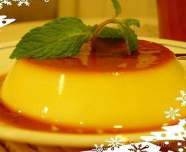

Cách làm bánh Flan

Nguyên liệu làm bánh flan
- 06 quả trứng gà: Bạn nên chọn trứng gà ta cho ngon và có lòng đỏ trứng nhiều nhé;
- 250ml sữa bò tươi.
- 1 hộp sữa đặc có đường (380g).
- 100g đường.
- 2 ống vani.
- 500ml nước sôi.
- Ngoài ra bạn cần có khuôn làm bánh và nồi hấp cách thủy.
Thực hiện làm bánh flan
- Cho đường và một chút nước vào xoong vặn lửa thật nhỏ đến khi đường cháy đều chuyển sang màu vàng cánh gián, bạn đổ hỗn hợp nêu trên vào khuôn tạo màu bánh caramen.
- Sữa tươi đổ vào xoong đun lửa to cho sôi bùng lên là được, sau đó đổ toàn bộ hộp sữa đặc và 500ml nước vào xoong khuấy đều.(có thể gia giảm nước nếu bạn thích ăn ngọt nhiều hay ít nhé)
- Đập 6 quả trứng ra, chỉ lấy lòng vàng, bỏ lòng trắng để bánh được mịn không bị tanh, đánh 6 quả trứng gà cho thật bông rồi đổ vào xoong sữa, tiếp tục đổ 2 ống bột vani, khuấy đều hỗn hợp trong xoong khoảng 3 phút là được, sau đó đổ hỗn hợp này vào các khuôn đã có sẵn caramen.
- Cho khuôn làm bánh vào nồi hấp cách thủy khoảng 30 phút là bánh chín.
- Trong quá trình hấp cách thủy, cứ 2 phút là bạn mở nắp nồi lau hơi nước mọt lần để tránh hơi nước làm ảnh hưởng đến độ ngon của bánh nhé.
- Bạn có thể kiểm tra bánh chín hay không bằng cách dùng cây tăm xăm vào bánh, nếu bánh không dính tăm có nghĩa là đã đạt yêu cầu.
- Lấy khuôn bánh ra, để nguội, cho vào tủ lạnh dùng dần.
Yêu cầu bánh flan
- Bánh flan sau khi hoàn thành có màu vàng nhạt của trứng rất đẹp mắt.
- Bánh hấp chín đều.
- Bánh dậy mùi thơm của trứng và sữa hòa quyện với nhau.
- Khi ăn, bánh có độ béo của bơ trong sữa bò, có mùi thơm đặc trưng.
Thưởng thức bánh flan
- Khi ăn bạn cắt bánh theo phần, cho thêm 1.2 thìa cà phê và 2-3 thìa đá bào rắc nhẹ lên trên là bạn có thể thưởng thức món bánh flan thơm ngon, bổ dưỡng rồi.
- Bạn có thể trình bày trên đĩa bánh thêm một ít trái cây ăn kèm để tăng thêm độ hấp dẫn của món bánh nhé.
Từ hướng dẫn làm bánh flan đơn giản tại nhà, bạn có thể sử dụng những nguyên liệu sẵn có trong tủ lạnh và thực hiện ngay món bánh flan thơm ngon cho cả nhà rồi đấy. Bạn có thể thay thế vị vani bằng các hương vị khác theo sở thích của cả gia đình nhé. Kết hợp với một số trái cây như dâu, táo, lêm… sẽ khiến món ăn ngon hơn, hấp dẫn hơn. Chúc bạn chế biến thành công món bánh flan rất ngon miệng này. Bạn cũng có thể hỏi thêm về cách làm bánh flan bằng cách bình luận phía dưới hoặc xem bình luận của các độc giả khác để hiểu rõ hơn hay rút kinh nghiệm cho bản thân mình.